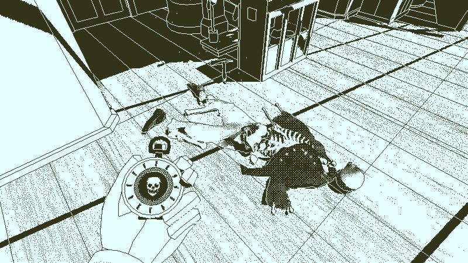
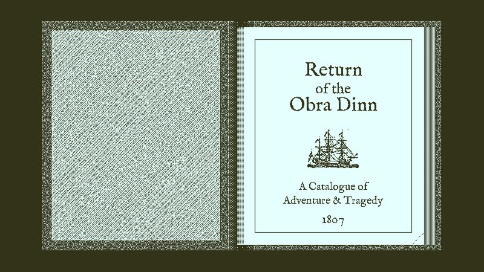

The thirty-second version
The best notebook you will ever fill in.
Turns out I will happily take notes for a boat, but not a meeting.
Return of the Obra Dinn is one of the smartest games ever made and one of the least explained. It hands you a manifest of sixty crew members, a pocket watch that shows the exact moment of each death, and expects you to work out who was who. There's no combat, no puzzle to grind, no help. There is you and a chair and, if you're serious about it, actual paper.
Okay, what is this thing?
You are an insurance adjuster. You are the only insurance adjuster in a game, we think. That is already funnier than most stories start. Your job is to walk around the deck of a ghost ship, click on skeletons, watch the frozen moment of their deaths, and identify each corpse by voice, hat, tattoo, or the fact that the guy standing over him is definitely his brother. This is our idea of a proper Saturday.
The dithered 1-bit art is not just a stylistic call, it is the puzzle interface. You have to read faces, read patterns, read shadows. The Memento Mortem watch snaps you into a paused three-dimensional tableau you can walk through and inspect. The book of the manifest is your working notepad, the game validates identities in threes so you can't brute-force it, and the whole thing takes about eight to twelve hours. It is airtight.


Why it escaped the group chat
- Every one of the sixty crew members can be identified from information gathered inside the game. No online lookups needed, no cheating required.
- Solutions are checked in batches of three, so guessing is punished and reasoning is rewarded.
- The 1-bit art style renders proper volumetric 3D scenes, which is a bizarre technical trick worth noticing.
Three dads enter
01
Dad Who Skipped the Tutorial
I respect it from a healthy distance.
I got through the tutorial, wrote three names down, then noticed the pocket watch was flipping between accents and quietly closed the laptop. I'm not the target audience. I respect it from a distance. I told my wife it looked like a very expensive escape room, and I wasn't entirely wrong about that assessment.
02
The Descent Guy
Twenty-seven crew identified in a single sitting.
I printed off the manifest. I organised my notes by chapter. I identified twenty-seven crew in a single sitting and then couldn't sleep because I was still working out the topman with the tattoo. This is exactly the kind of game my brain was born for, and one of the few times the other two have been genuinely jealous of that brain.
03
Normal-ish Dad
You only get to solve it once, and that's fine.
I finished it over four evenings on PC and I reckon that's the correct scope. I also think it's the sort of game that only really works once, and that's fine by me. You get one honest solve and a story you'll bring up at dinner parties. That's more than most twelve-hour games manage in our house.
Who it is for and what to watch
Invite these people
- Anyone who liked The Case of the Golden Idol and wants more brain-tickling
- People who enjoy taking notes on a physical piece of paper
- Solo evenings with a lamp, a beer, and no other tabs open
Dad caveats
- No combat, no timers, no hand-holding. Some of you will bounce off the deduction loop.
- The 1-bit look can strain tired eyes; the game has settings for that, use them
- You will absolutely spoil it if you Google anything. Please don't.
Receipts
All three of us finished it on PC. Two took about ten hours each, the third took twenty and refused to look anything up, and we respect that.